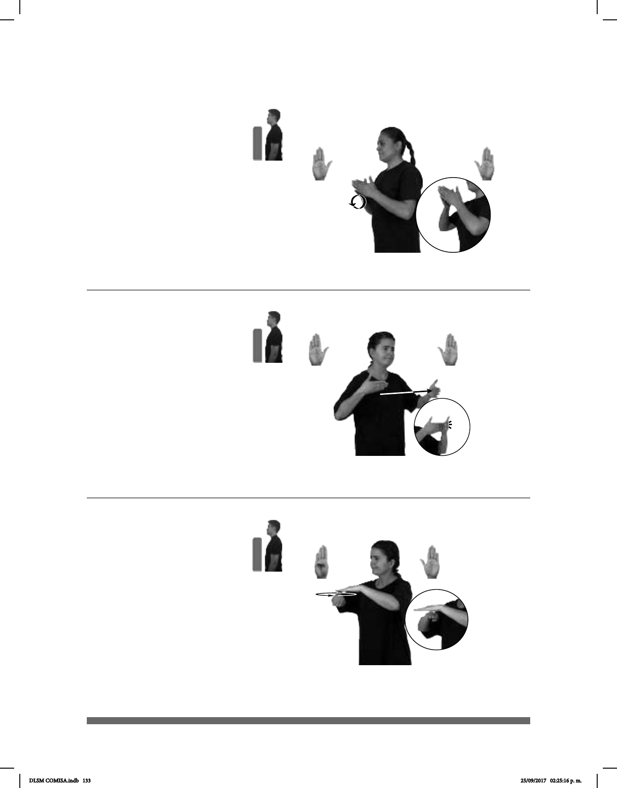

133
Seña: SS
B-P.2
Palmas oblicuas
hacia el centro y hacia adentro.
A la altura del pecho;
las puntas de los dedos se tocan.
Las manos simulan
dos saltos hacia enfrente.
sust. m. Embarcación
de estructura cóncava y,
generalmente, de grandes
dimensiones.
(B-P 67)
MAÑANA BARCO YA LLEGAR
El barco llegó en la mañana.
1
2
(B-P 68)
BARRERAS COMUNICACIÓN QUITAR PODER
Las barreras de comunicación pueden eliminarse.
1
2
(B-P 69)
PAVO COMIDA BÁSICA NAVIDAD
Los pavos son la comida básica en Navidad.
Seña: SB
MD y MB B-P.2
MD palma oblicua hacia la
izquierda y hacia adentro. MB palma
oblicua hacia la derecha y hacia adentro.
MD y MB a la altura del
pecho.
La MD golpea con la punta
de los dedos a la MB.
Ceño fruncido,
labios retraídos.
sust. f. Impedimento,
deformación del mensaje u
obstaculización en el proceso
comunicativo.
Seña: SB
MD B-P.1, MB
B-P.2
MD y MB palmas
hacia abajo.
A la altura del pecho.
MD debajo de MB.
La MD se mueve
formando círculos.
1. adj. Que se
encuentra en la base de una cosa,
que es de importancia fundamental.
2. adv. Fundamentalmente.
DLSM COMISA.indb 133 25/09/2017 02:25:16 p. m.